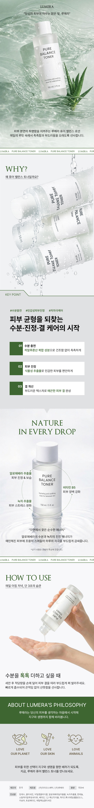

Calm Derma & Hydration Balance
피부 균형 & 수분 진정 케어
Product Detail
Design Point
- 1 프로젝트 개요 및 기획 의도
-
피부 균형과 수분 진정이라는 핵심 기능을 중심으로 더마 코스메틱 콘셉트를 기획했습니다.
자연 유래 성분과 저자극 이미지를 강조하여 신뢰감 있는 브랜드 방향성을 설정했습니다.
사용자가 제품 효능을 직관적으로 이해할 수 있도록 콘텐츠 흐름을 설계했습니다. - 2 AI 이미지 생성 기반 비주얼 구현
-
AI 이미지 생성을 활용해 수분감과 청량한 텍스처가 느껴지는 비주얼을 제작했습니다.
물결, 식물 요소 등을 활용하여 자연 친화적이고 깨끗한 무드를 표현했습니다.
프롬프트를 통해 컬러와 질감을 정교하게 조정하여 브랜드 톤을 일관되게 유지했습니다. - 3 정보 구조 설계와 사용자 흐름
-
WHY → KEY POINT → 성분 → 사용법 순으로 이어지는 구조를 설계했습니다.
제품의 기능을 단계적으로 전달하여 사용자가 자연스럽게 이해하도록 유도했습니다.
핵심 정보는 강조하고, 부가 정보는 정리하여 가독성을 높였습니다. - 4 디자인 디테일과 톤앤매너
-
그린 계열 컬러와 여백 중심 레이아웃으로 차분하고 신뢰감 있는 무드를 구축했습니다.
타이포그래피 대비를 활용해 정보 위계를 명확히 표현했습니다.
전체적으로 더마 브랜드에 어울리는 깔끔하고 정제된 디자인을 완성했습니다.

